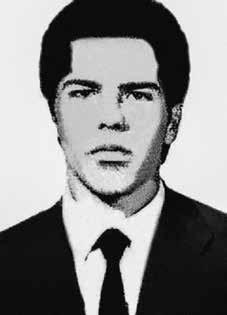

Aldo
de Sá
Brito
Souza
Neto
CIRCUNSTÂNCIAS DA MORTE
Aldo de Sá Brito Souza Neto morreu após, no dia 6 de janeiro de 1971, ser preso por agentes do DOI-CODI de Belo Horizonte (MG) enquanto realizava uma ação armada em uma agência do Banco Nacional de Minas Gerais. Tal fato se deu no contexto das negociações entre militares e militantes, após o sequestro do embaixador suíço no Brasil, em 7 dezembro de 1970. Essa prisão foi, portanto, usada como um grande trunfo dos órgãos da repressão contra as organizações de esquerda envolvidas no episódio. Diferentes versões sobre a sua morte foram noticiadas e envoltas pela contrainformação da repressão. A primeira foi publicada pelo jornal Estado de Minas, do dia 8 de janeiro de 1971, que noticiou o assalto, informando que este teria sido realizado por cinco pessoas, todos militantes da ALN, registrando a prisão de duas, a morte de uma e a fuga de outras duas. Ainda, segundo a mesma reportagem, os nomes dos militantes presos foram mantidos em sigilo “em benefício das investigações”. A despeito disto, afirmou que o morto seria Fernando Araújo Bacelar e que ele havia caído do terceiro andar de um prédio ao fugir. Na queda, havia fraturado a bacia, sendo levado, em seguida, ao Hospital Militar, onde teria chegado quase inconsciente e dizendo-se chamar-se Haroldo, morrendo logo depois. Ademais, alguns jornais publicaram a notícia da sua prisão apresentando a foto de outra pessoa. A outra versão sobre a morte de Aldo apareceu logo no dia seguinte, em 9 de janeiro de 1971. As manchetes dos jornais informaram a prisão, apontando que esta teria ocorrido durante investida da polícia ao “aparelho” onde estariam militantes da ALN. Em entrevista à imprensa, o delegado do Departamento de Ordem Política e Social (DOPS), Renato Divani Aragão, buscando justificar a prisão, afirmou que Aldo era um “homem forte da ALN” e que estava sendo interrogado naquele instante, não autorizando o seu registro por parte da imprensa. A narrativa oficial sobre o caso tentou transmitir a informação de que uma importante liderança da ALN estava presa, referindo-se a Aldo e, simultaneamente, a Fernando Araújo Bacelar, como duas pessoas diferentes, quando, na verdade, tratava-se da mesma pessoa. Para complementar a história elaborada para ocultar a sua morte, durante a declaração prestada à imprensa, afirmou-se que todos os órgãos da repressão de Minas Gerais, Rio de Janeiro e São Paulo estavam a postos à espera de uma possível tentativa de libertar Aldo por parte de seus companheiros da ALN. Com a libertação dos 70 presos políticos em troca do embaixador suíço, já no dia 14, os jornais voltaram a discutir o caso. Em nota, o CODI/MG tentou reforçar uma das falsas versões, ao apontar que o militante que havia morrido ao tentar fugir da perseguição policial, teria se jogado do 3º andar de um prédio. Por semelhante modo, indicou que apenas naquele dia o corpo da vítima havia sido reconhecido, tanto pelos órgãos de segurança, quanto pela família, como sendo de Aldo. Para incrementar a narrativa, a nota destacava que outro militante, preso na mesma ocasião, teria tentado dificultar a ação policial ao se identificar como Aldo, informando que ele seria processado e transferido para o Rio de Janeiro, a pedido das autoridades de segurança. Já na edição do jornal Estado de Minas, de 14 de janeiro, foram apresentadas explicações acerca das informações propositalmente confusas sobre a prisão e morte de Aldo. Segundo a mesma matéria, os órgãos de segurança sabiam que ele já estava morto e teriam noticiado que ele ainda estava preso, como uma estratégia para intimidar seus companheiros de militância e, assim, obter mais informações sobre o sequestro do embaixador suíço. Para compor esse embuste, o corpo de Aldo de Sá Brito Souza Neto foi identificado com o nome de outra pessoa. O exame necroscópico, produzido pelo Instituto Médico Legal no dia 7 de janeiro, confirma a falsa versão de que Aldo morrera ao tentar fugir do cerco policial. Por sua vez, discordando desse laudo, a certidão de óbito, assinada por um médico que não participou da necropsia, aponta que Aldo teria morrido no Hospital Militar por “fratura do crânio com hemorragia cerebral”. A avó de Aldo, Mercedes, assim que soube da prisão do neto, dirigiu-se para Belo Horizonte. Com a colaboração de seu primo, o cardeal do Rio de Janeiro Dom Jayme de Barros Câmara, apresentou-se ao Arcebispo de Belo Horizonte, Dom João Resende Costa, que indicou o bispo auxiliar, Dom Serafim, para acompanhá-la até o DOPS/MG. Neste órgão, foi informada de que seu neto havia sido levado para a cidade de Juiz de Fora e que em dois dias voltaria a Belo Horizonte, quando então, poderia vê-lo. Contudo, quando estava no aeroporto, leu nos jornais a notícia da morte de Aldo. Em seguida, foi levada ao necrotério, mas o corpo que lhe apresentaram não era o dele. Dois dias depois, retornou àquela cidade junto com o pai de Aldo, momento em que confirmaram que ele estava morto. Duas testemunhas de sua prisão, Marcos Nonato da Fonseca e Manoel José Nunes Mendes de Abreu, também desconstruíram a versão de que Aldo teria morrido no momento da prisão. Tais testemunhas foram assassinadas posteriormente, mas, na época, explicaram que eles estavam fugindo da perseguição realizada pelos órgãos da repressão quando Aldo, ao buscar pular de um prédio para outro, acabou preso e morto no dia seguinte. Ao cair, machucou as pernas, não conseguindo mais fugir, sendo pego e levado para o DOPS onde foi interrogado sob tortura. Além destes, em 1971, o preso político Paulo Henrique Oliveira da Rocha Lins, durante audiência na Justiça Militar, da Segunda Auditoria da Marinha, também afirmou que a morte de Aldo fora provocada pela polícia de Minas Gerais. Outros presos políticos à época dos fatos apontaram, em depoimentos, que os responsáveis pelo assassinato de Aldo foram o tenente Marcelo Paixão, do Centro de Preparação de Oficiais da Reserva (CPOR), o capitão Pedro Ivo e o delegado Renato Aragão. Em concordância com a causa de morte registrada na certidão de óbito, a família apresentou registros de que Aldo fora morto com a utilização do instrumento de tortura chamado “coroa de cristo”, que consiste numa fita de aço que aos poucos comprime o crânio. Embora não haja fotos de seu corpo, a família afirma que, ao ver o corpo, foi possível constatar o afundamento desta região. A prova decisiva que desconstrói a versão falsa da morte é um documento localizado no Arquivo Nacional, produzido pela Agência Belo Horizonte do Serviço Nacional de Informações (SNI). Neste, há a confirmação de que órgãos de segurança forjaram as circunstâncias da morte de Aldo. Seu nome foi utilizado na tentativa de captura de outros militantes da ALN. Para tanto, segundo o registro, tais agências realizaram uma troca de corpos no Instituto de Medicina Social para impossibilitar o seu reconhecimento, além de divulgar a informação de que ele estaria preso e sendo interrogado. Os jornais de 15 de janeiro noticiaram que o traslado dos seus restos mortais para o Rio de Janeiro foi realizado com o acompanhamento de um inspetor do DOPS/MG e de um coronel. Os agentes da repressão deram uma ordem de que a família não poderia fazer velório. Apenas foi permitido abrir o caixão no cemitério, para rápido reconhecimento. Em uma cerimônia restrita, o tio-avô de Aldo, Dom Jayme de Barros Câmara, cardeal do Rio de Janeiro, celebrou uma missa em sua memória. Aldo foi enterrado no Cemitério da Guanabara.
Aldo de Sá Brito Souza Neto died after, on January 6, 1971, he was arrested by DOI-CODI agents from Belo Horizonte (MG) while carrying out an armed action at a branch of the National Bank of Minas Gerais. This fact occurred in the context of negotiations between the military and militants, after the kidnapping of the Swiss ambassador in Brazil, on December 7, 1970. This arrest was, therefore, used as a great asset by the repression bodies against the left-wing organizations involved in the episode. Different versions of his death were reported and shrouded in the counter-information of repression. The first was published by the newspaper Estado de Minas, on January 8, 1971, which reported the robbery, stating that it had been carried out by five people, all ALN militants, recording the arrest of two, the death of one and the escape of two others. Furthermore, according to the same report, the names of the arrested militants were kept confidential “for the benefit of investigations”. Despite this, he stated that the deceased was Fernando Araújo Bacelar and that he had fallen from the third floor of a building while fleeing. In the fall, he had fractured his pelvis and was then taken to the Military Hospital, where he arrived almost unconscious and said his name was Haroldo, dying soon after. Furthermore, some newspapers published the news of his arrest featuring a photo of another person. The other version about Aldo's death appeared the very next day, on January 9, 1971. Newspaper headlines reported the arrest, pointing out that it had occurred during a police raid on the “apparatus” where ALN militants were believed to be. In an interview with the press, the delegate of the Department of Political and Social Order (DOPS), Renato Divani Aragão, seeking to justify the arrest, stated that Aldo was a “strong man of the ALN” and that he was being interrogated at that moment, not authorizing his recording by the press. The official narrative about the case tried to convey the information that an important ALN leader was arrested, referring to Aldo and, simultaneously, to Fernando Araújo Bacelar, as two different people, when, in fact, they were the same person. To complement the story created to hide his death, during the statement given to the press, it was stated that all repressive bodies in Minas Gerais, Rio de Janeiro and São Paulo were ready to wait for a possible attempt to free Aldo by his ALN companions. With the release of 70 political prisoners in exchange for the Swiss ambassador, on the 14th, the newspapers returned to discussing the case. In a note, CODI/MG tried to reinforce one of the false versions, by pointing out that the militant who had died while trying to escape police pursuit had thrown himself from the 3rd floor of a building. In a similar way, he indicated that only on that day the victim's body had been recognized, both by security agencies and by the family, as being Aldo's. To enhance the narrative, the note highlighted that another militant, arrested on the same occasion, had tried to hinder police action by identifying himself as Aldo, informing that he would be prosecuted and transferred to Rio de Janeiro, at the request of the security authorities. In the January 14 edition of the newspaper Estado de Minas, explanations were presented regarding the purposefully confusing information about Aldo's arrest and death. According to the same article, the security agencies knew that he was already dead and reported that he was still in prison, as a strategy to intimidate his fellow activists and, thus, obtain more information about the kidnapping of the Swiss ambassador. To compound this hoax, the body of Aldo de Sá Brito Souza Neto was identified with the name of another person. The necroscopic examination, carried out by the Legal Medical Institute on January 7, confirms the false version that Aldo died while trying to escape the police siege. In turn, disagreeing with this report, the death certificate, signed by a doctor who did not participate in the autopsy, indicates that Aldo died at the Military Hospital due to a “skull fracture with cerebral hemorrhage”. Aldo's grandmother, Mercedes, as soon as she found out about her grandson's arrest, headed to Belo Horizonte. With the collaboration of her cousin, the Cardinal of Rio de Janeiro Dom Jayme de Barros Câmara, she presented herself to the Archbishop of Belo Horizonte, Dom João Resende Costa, who appointed the auxiliary bishop, Dom Serafim, to accompany her to the DOPS/MG. In this body, she was informed that her grandson had been taken to the city of Juiz de Fora and that in two days she would return to Belo Horizonte, when she would be able to see him. However, when he was at the airport, he read the news of Aldo's death in the newspapers. She was then taken to the morgue, but the body they presented to her was not his. Two days later, he returned to that city together with Aldo's father, at which point they confirmed that he was dead. Two witnesses to his arrest, Marcos Nonato da Fonseca and Manoel José Nunes Mendes de Abreu, also deconstructed the version that Aldo had died at the time of his arrest. These witnesses were later murdered, but, at the time, they explained that they were fleeing the persecution carried out by the repression agencies when Aldo, trying to jump from one building to another, ended up arrested and killed the following day. When he fell, he injured his legs and was no longer able to escape, being caught and taken to the DOPS where he was interrogated under torture. In addition to these, in 1971, political prisoner Paulo Henrique Oliveira da Rocha Lins, during a hearing in the Military Court, of the Second Navy Audit, also stated that Aldo's death was caused by the Minas Gerais police. Other political prisoners at the time of the events pointed out, in statements, that those responsible for Aldo's murder were Lieutenant Marcelo Paixão, from the Reserve Officer Preparation Center (CPOR), Captain Pedro Ivo and Deputy Renato Aragão. In agreement with the cause of death recorded on the death certificate, the family presented records that Aldo was killed using a torture instrument called the “crown of Christ”, which consists of a steel ribbon that gradually compresses the skull. Although there are no photos of his body, the family claims that, upon seeing the body, it was possible to see that this region had sunk. The decisive piece of evidence that deconstructs the false version of the death is a document located in the National Archives, produced by the Belo Horizonte Agency of the National Information Service (SNI). In this, there is confirmation that security agencies faked the circumstances of Aldo's death. His name was used in attempts to capture other ALN militants. To this end, according to the record, these agencies carried out an exchange of bodies at the Institute of Social Medicine to make it impossible for him to be recognized, in addition to publicizing the information that he was being arrested and being interrogated. The newspapers on January 15 reported that the transfer of his remains to Rio de Janeiro was carried out under the supervision of a DOPS/MG inspector and a colonel. The repression agents gave an order that the family could not hold a wake. It was only allowed to open the coffin in the cemetery, for quick recognition. In a restricted ceremony, Aldo's great-uncle, Dom Jayme de Barros Câmara, cardinal of Rio de Janeiro, celebrated a mass in his memory. Aldo was buried in the Guanabara Cemetery.
Aldo de Sá Brito Souza Neto murió después de que, el 6 de enero de 1971, fuera detenido por agentes del DOI-CODI de Belo Horizonte (MG), mientras realizaba una acción armada en una sucursal del Banco Nacional de Minas Gerais. Este hecho se produjo en el contexto de negociaciones entre militares y militantes, tras el secuestro del embajador de Suiza en Brasil, el 7 de diciembre de 1970. Esta detención fue, por tanto, utilizada como una gran baza por los órganos de represión contra las organizaciones de izquierda involucradas en el episodio. Sobre su muerte se dieron diferentes versiones, envueltas en la contrainformación de la represión. El primero fue publicado por el diario Estado de Minas, el 8 de enero de 1971, que daba cuenta del robo, afirmando que había sido perpetrado por cinco personas, todos militantes del ALN, registrando la detención de dos, la muerte de una y la fuga de otras dos. Además, según el mismo informe, los nombres de los militantes detenidos se mantuvieron confidenciales "en beneficio de las investigaciones". Pese a ello, afirmó que el fallecido era Fernando Araújo Bacelar y que había caído desde el tercer piso de un edificio mientras huía. En la caída se había fracturado la pelvis y luego fue trasladado al Hospital Militar, donde llegó casi inconsciente y dijo llamarse Haroldo, falleciendo poco después. Además, algunos periódicos publicaron la noticia de su detención junto con una fotografía de otra persona. La otra versión sobre la muerte de Aldo apareció al día siguiente, el 9 de enero de 1971. Los titulares de los periódicos informaron del arresto, señalando que había ocurrido durante una redada policial en el “aparato” donde se creía que se encontraban militantes del ALN. En entrevista con la prensa, el delegado del Departamento de Orden Político y Social (DOPS), Renato Divani Aragão, buscando justificar la detención, afirmó que Aldo era un “hombre fuerte de la ALN” y que estaba siendo interrogado en ese momento, sin autorizar su grabación por la prensa. La narrativa oficial sobre el caso intentó transmitir la información de que un importante dirigente de la ALN fue detenido, refiriéndose a Aldo y, simultáneamente, a Fernando Araújo Bacelar, como dos personas diferentes, cuando en realidad eran la misma persona. Para complementar el relato creado para ocultar su muerte, durante la declaración dada a la prensa se afirmó que todos los cuerpos represivos de Minas Gerais, Río de Janeiro y São Paulo estaban dispuestos a esperar un posible intento de liberar a Aldo por parte de sus compañeros de la ALN. Con la liberación de 70 presos políticos a cambio del embajador suizo, el día 14, los periódicos volvieron a hablar del caso. En una nota, el CODI/MG intentó reforzar una de las versiones falsas, señalando que el militante que murió mientras intentaba escapar de la persecución policial se había arrojado desde el tercer piso de un edificio. De igual manera, indicó que recién ese día el cuerpo de la víctima había sido reconocido, tanto por organismos de seguridad como por la familia, como el de Aldo. Para enriquecer el relato, la nota destaca que otro militante, detenido en la misma ocasión, había intentado obstaculizar la acción policial identificándose como Aldo, informando que sería procesado y trasladado a Río de Janeiro, a petición de las autoridades de seguridad. En la edición del 14 de enero del periódico Estado de Minas se dieron explicaciones sobre la información deliberadamente confusa sobre el arresto y la muerte de Aldo. Según el mismo artículo, los organismos de seguridad sabían que ya estaba muerto e informaron que aún se encontraba en prisión, como estrategia para intimidar a sus compañeros activistas y, así, obtener más información sobre el secuestro del embajador suizo. Para agravar este engaño, el cuerpo de Aldo de Sá Brito Souza Neto fue identificado con el nombre de otra persona. El examen necroscópico, realizado por el Instituto Médico Legal el 7 de enero, confirma la versión falsa de que Aldo murió mientras intentaba escapar del cerco policial. A su vez, en desacuerdo con este informe, el certificado de defunción, firmado por un médico que no participó en la autopsia, indica que Aldo falleció en el Hospital Militar a causa de una “fractura de cráneo con hemorragia cerebral”. La abuela de Aldo, Mercedes, tan pronto como se enteró de la detención de su nieto, se dirigió a Belo Horizonte. Con la colaboración de su primo, el cardenal de Río de Janeiro Dom Jayme de Barros Câmara, se presentó ante el arzobispo de Belo Horizonte, Dom João Resende Costa, quien nombró al obispo auxiliar, Dom Serafim, para que la acompañara al DOPS/MG. En ese organismo fue informada que su nieto había sido llevado a la ciudad de Juiz de Fora y que en dos días regresaría a Belo Horizonte, cuando podría verlo. Sin embargo, cuando estaba en el aeropuerto, leyó en los periódicos la noticia de la muerte de Aldo. Luego la llevaron a la morgue, pero el cuerpo que le presentaron no era el de él. Dos días después regresó a esa ciudad junto con el padre de Aldo, momento en el que confirmaron que estaba muerto. Dos testigos de su detención, Marcos Nonato da Fonseca y Manoel José Nunes Mendes de Abreu, también deconstruyeron la versión de que Aldo había muerto en el momento de su detención. Estos testigos fueron posteriormente asesinados, pero, en su momento, explicaron que huían de la persecución de los organismos de represión cuando Aldo, al intentar saltar de un edificio a otro, acabó detenido y asesinado al día siguiente. Al caer se lastimó las piernas y ya no pudo escapar, siendo atrapado y llevado al DOPS donde fue interrogado bajo tortura. Además de estos, en 1971, el preso político Paulo Henrique Oliveira da Rocha Lins, durante una audiencia en el Tribunal Militar, de la Segunda Auditoría de la Marina, también afirmó que la muerte de Aldo fue provocada por la policía de Minas Gerais. Otros presos políticos en el momento de los hechos señalaron, en declaraciones, que los responsables del asesinato de Aldo eran el teniente Marcelo Paixão, del Centro de Preparación de Oficiales de Reserva (CPOR), el capitán Pedro Ivo y el diputado Renato Aragão. De acuerdo con la causa de muerte registrada en el certificado de defunción, la familia presentó constancia de que Aldo fue asesinado utilizando un instrumento de tortura llamado “corona de Cristo”, que consiste en una cinta de acero que comprime gradualmente el cráneo. Aunque no existen fotografías de su cuerpo, la familia afirma que, al ver el cuerpo, se pudo comprobar que esta región se había hundido. La prueba decisiva que deconstruye la versión falsa de la muerte es un documento ubicado en el Archivo Nacional, elaborado por la Agencia Belo Horizonte del Servicio Nacional de Información (SNI). En esto se confirma que los organismos de seguridad falsificaron las circunstancias de la muerte de Aldo. Su nombre fue utilizado en intentos de capturar a otros militantes del ALN. Para ello, según consta en el expediente, dichos organismos realizaron un intercambio de cadáveres en el Instituto de Medicina Social para imposibilitar su reconocimiento, además de dar a conocer la información de que estaba siendo detenido e interrogado. Los periódicos del 15 de enero informaron que el traslado de sus restos a Río de Janeiro se realizó bajo la supervisión de un inspector del DOPS/MG y un coronel. Los agentes de represión dieron orden de que la familia no pudiera realizar velorio. Sólo se permitió abrir el ataúd en el cementerio, para un rápido reconocimiento. En una ceremonia restringida, el tío abuelo de Aldo, Dom Jayme de Barros Câmara, cardenal de Río de Janeiro, celebró una misa en su memoria. Aldo fue enterrado en el Cementerio de Guanabara.